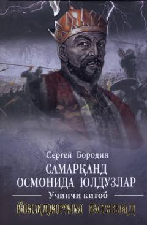

SOAmir Temur va Yildirim Boyazid o'rtasidagi tarixiy kurash va ziddiyatlarga bag'ishlangan roman.
Mazkur kitobda Amir Temur va Usmoniylar sultoni Yildirim Boyazid o'rtasidagi taqdiriy kurash, ikki buyuk sarkardaning siyosiy to'qnashuvlari hamda o'sha davrdagi tarixiy voqealar mahorat bilan tasvirlangan. Asar rus tilidan Mirkarim Osim tomonidan tarjima qilingan.